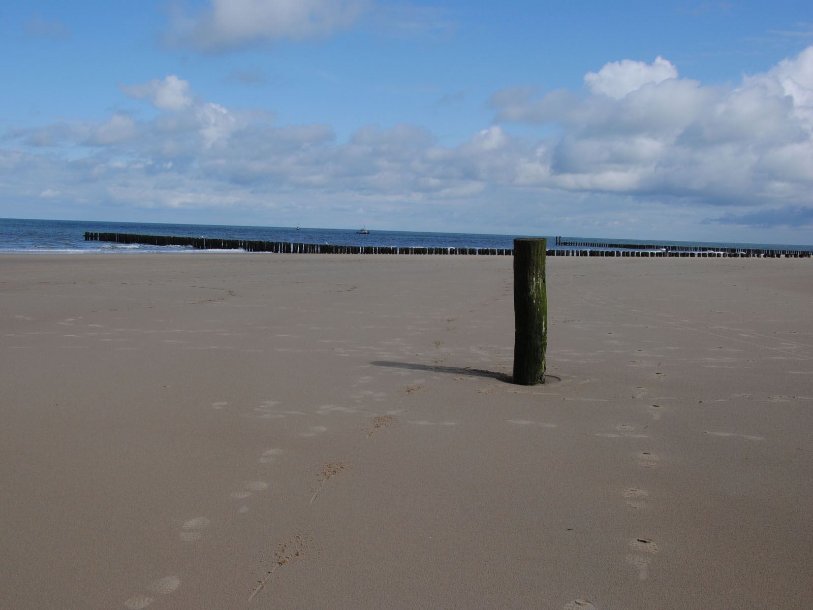
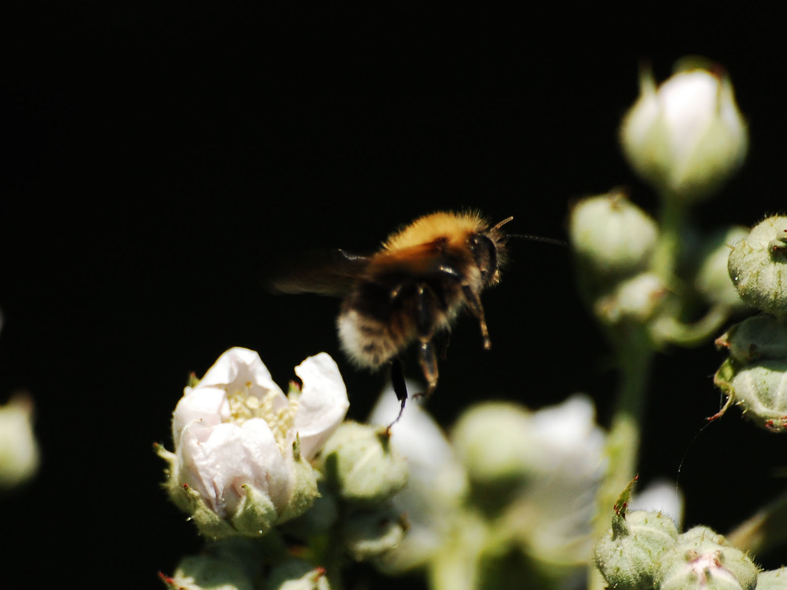
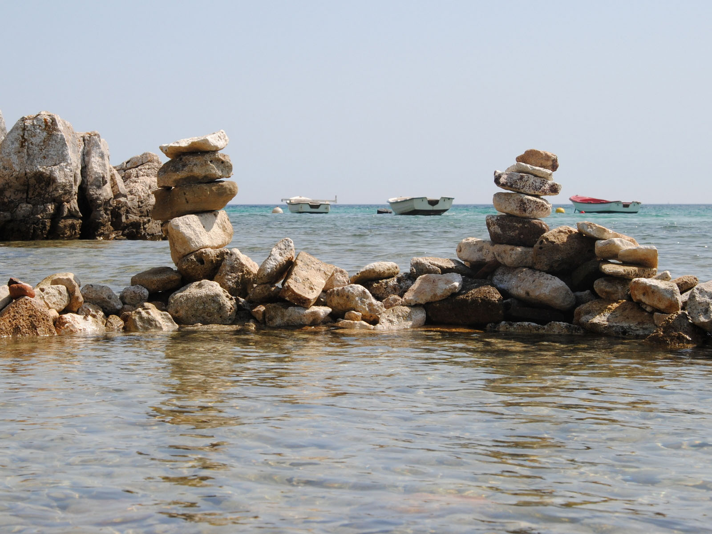
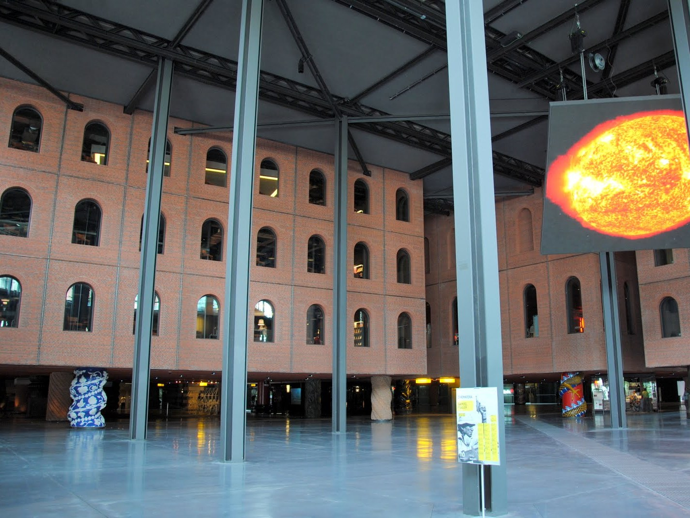
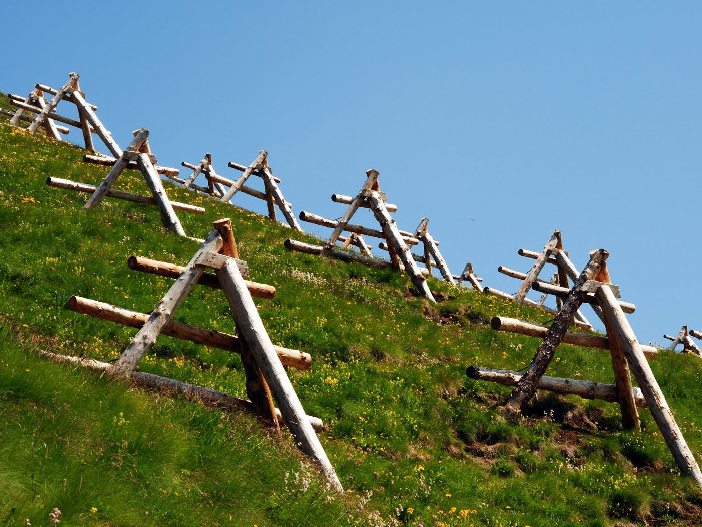
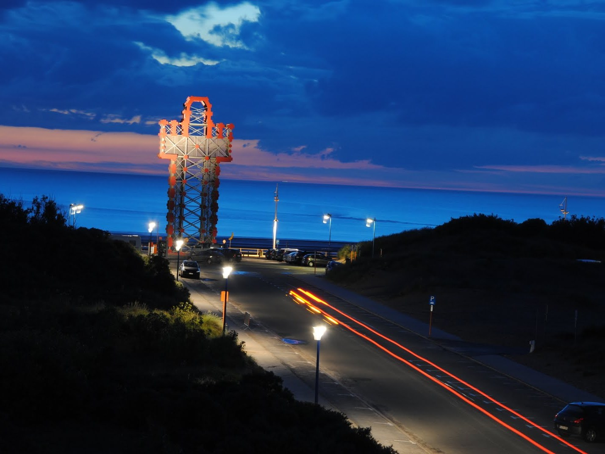

- 
- 
- 
- 
- 
- 
Washington DC USA38°53'19.61"N -77°1'11.57"E
Domburg NL51°33'52"N 3°29'30"E
Prague CZ50°5'27"N 14°24'2"0
Haironville FR48°41'12"N 5°5'34"E
Istria HR44°51'6"N 13°58'1"E
Bilbao ES43°15'36"N -2°56'9"E
Zuid-Tirol IT46°10'11"N 12°3'7"E
Oostduinkerke BE51°6'19"N 2°39'0"E
home
Met een duurzame samenleving als missie, maakt nazka smart mapps: innovatieve geo-ict toepassingen op maat. Eenvoudig, intelligent en vooruitziend.